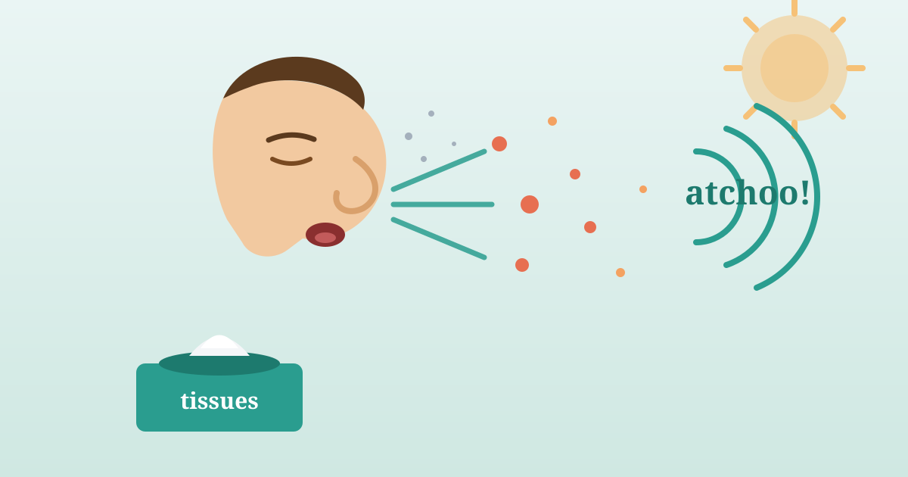

Why Do We Sneeze?

It starts with a tickle. A tiny itch deep inside your nose grows into an unstoppable urge, you take a sharp breath in, and then — atchoo! — a burst of air explodes out of your nose and mouth, your eyes snap shut, and a moment later it is all over. You did not decide to sneeze. Once the tickle reaches a certain point, you could not stop it if you tried.
The short answer is that a sneeze is your nose's emergency eject button. It is a reflex — a pre-programmed sequence run by the brainstem, not by your conscious mind — designed to blast irritants out of your nose before they can travel further into your airways. Dust, pollen, pepper, a cold virus, or even a sudden flash of bright light can set it off.
The Sneeze Reflex: Your Nose's Alarm System
Your nose is a filter as well as a doorway. The inside of it is lined with a sticky layer of mucus and millions of tiny hairs called cilia, which trap dust, pollen, and germs from the air you breathe. Nerve endings sit just under this lining, and they are wired to a control centre in the lower part of the brain called the medulla — the same part of the brainstem that keeps your breathing and heartbeat going without you thinking about them.
When an irritant touches those nerve endings, they fire a signal along the trigeminal nerve, the nerve that carries feeling from your face to your brain. The medulla reads that signal as an alarm: something unwanted is in the nose, and it needs to come out now. It takes over the muscles of your chest, belly, throat, and face and runs the sneeze for you, in a fixed order, every time.
What Sets a Sneeze Off
The most common triggers are things that land on the lining of the nose: dust, pollen, pet hair, smoke, strong smells, and the spray from a cleaning product. When you have a cold or an allergy, the lining is already swollen and sensitive, so much smaller provocations are enough — a change in temperature or dry air can set off a fit.
Some triggers have nothing to do with the nose at all. About one person in five sneezes when they step from a dark room into bright sunlight, a quirk known as the photic sneeze reflex, sometimes nicknamed ACHOO syndrome — a playful backronym for Autosomal Dominant Compelling Helio-Ophthalmic Outburst. The leading explanation is crossed wiring: the signal that shrinks your pupils in bright light passes close to the trigeminal nerve, and in some people it spills over and trips the sneeze alarm.
The Anatomy of a Sneeze, Step by Step
A sneeze is not one movement but a chain of them, and the medulla runs them in the same order every time. First comes a deep breath in, filling the lungs with air. Then the vocal cords snap shut, sealing the airway, while the muscles of the chest and belly squeeze hard. Pressure builds up behind the closed throat, just like air behind a cork.
Then the vocal cords open suddenly, and all that compressed air rushes out in a single violent burst, mostly through the nose but partly through the mouth. The air can leave at speeds often quoted at up to 100 miles per hour (160 kilometres per hour), carrying mucus and whatever irritant started the whole thing. The tongue presses against the roof of the mouth, shaping the rush of air into the sound we recognise — the "a" of "atchoo" — while the soft palate flips up to direct the blast out through the nose. The whole sequence is over in well under a second.
Why Your Eyes Close — and What Else Happens Automatically
You cannot sneeze with your eyes open, and it is not because your eyeballs would pop out — that old story is a myth. Your eyes close because the sneeze programme includes the muscles around the eyes: the medulla sends the same "brace yourself" signal to your eyelids as it does to your chest and throat.
Your heart may skip a beat briefly as the pressure inside your chest spikes, and the muscles in your belly contract so hard that a sneeze can hurt if you have a pulled muscle. The burst of air also clears the throat and the front of the airways, which is why you feel relief afterwards: the irritant is gone.
Why Sneezes Come in Twos and Threes
Most people do not sneeze once. They sneeze twice, three times, or in longer fits, and the reason is simple: the first sneeze does not always finish the job. If the speck of dust or pollen is still sitting on the lining of the nose after the first blast, the nerve endings fire again, and the medulla runs the programme a second time.
Each sneeze also loosens the next layer of mucus, carrying the irritant a little further out with every blast. That is why a fit usually ends by itself: once the lining is clear, the alarm stops firing. People with allergies or a cold sneeze in longer fits because their lining is inflamed and keeps sending false alarms. Some people have a "double sneeze" pattern their whole life — it is simply how their reflex is tuned.
Why You Cannot Sneeze in Your Sleep
You can sneeze while you are drowsy, but once you are properly asleep, sneezing stops. During sleep the brain actively suppresses reflexes, including the sneeze reflex, so that small irritations do not keep waking you up.
That is also why a strong sneeze urge can wake you: if the irritation is strong enough, it breaks through the suppression, wakes you first, and only then lets the sneeze happen. The same suppression applies to coughing, which is why a cold keeps you awake as you drift off but lets you sleep through the night.
Common Mistakes
The most common mistake is holding a sneeze in. Pinching your nose shut and clamping your mouth closed while the sneeze fires sends all that built-up pressure somewhere it was never meant to go — into your ears and throat. In rare, documented cases this has burst an eardrum or torn tissue in the throat. It is far safer to let the sneeze out, into a tissue or the inside of your elbow, away from other people.
Another mistake is sneezing into your hands. A sneeze sprays thousands of tiny droplets, and your hands then touch door handles, phones, and other people, which is exactly how colds spread. The elbow is a better target: it catches the spray and you are far less likely to touch anything with it.
Finally, do not assume every sneeze means you are ill. Sneezing is a normal, healthy reflex, and most sneezes are just your nose doing its job. It is only worth a doctor's visit if sneezing comes with a fever that will not go away, pain in the face or sinuses, blood in the mucus, or fits that last for weeks without an obvious cause.
Frequently Asked Questions
Can you sneeze with your eyes open?
No. The sneeze programme closes your eyelids automatically, and holding them open against it is almost impossible. The old warning that your eyes would pop out is a myth.
Why do some people sneeze when they look at the sun?
This is the photic sneeze reflex, and it affects roughly one person in five. The signal that shrinks your pupils in bright light passes close to the trigeminal nerve, and in some people it spills over and trips the sneeze alarm. It runs in families and is completely harmless.
How fast is a sneeze, really?
Figures of up to 100 miles per hour (160 kilometres per hour) are often quoted, and the burst of air is genuinely fast — fast enough to spray droplets several metres. Modern measurements give a wide range depending on the person, but even at the lower end it is far faster than a cough, which is why covering a sneeze matters.
Why does pepper make you sneeze?
Ground pepper contains piperine, a chemical that irritates the nerve endings in the nose just as dust does. It is not an allergy — the nose simply treats it as an unwanted particle to be blasted out.
Conclusion
A sneeze is a reflex, not a decision: an irritant touches the nerve endings in your nose, the trigeminal nerve carries the alarm to the medulla, and the brainstem runs a fixed programme — deep breath in, pressure builds, sudden release — that blasts the irritant out at high speed. It comes in twos and threes when one blast is not enough, it switches off while you sleep, and it sometimes fires by mistake at bright sunlight. Let it out, aim it at your elbow, and let your nose do its job.